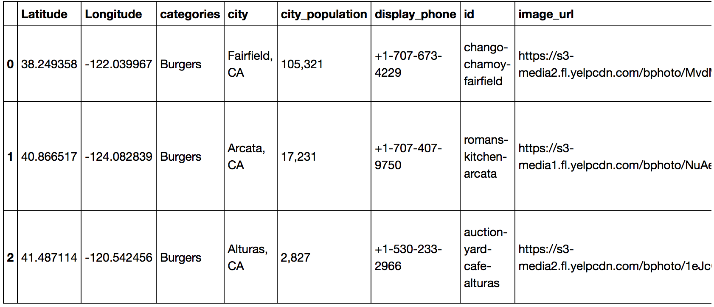

- Create functions to extract infomation that we need.
- Use plotly to make interactive plots so that users can look at the plots more specifically.
- Use map to display the top restaurants/hotels/landmarks.
STEP 1:
| categories |
City |
Phone Number |
id |
img_url |
Closed? |
name |
rating |
Review Count |
Snippet Text |
URL |
city_pop. |
Lat. |
Lon. |
| Thai |
Adelanto, CA |
+1-760-246-8122 |
thai-siam-restaurant-adelanto |
https://s3-media2.fl.yelpcdn.com/bphoto/W_GP2k... |
0 |
Thai-Siam Restaurant |
4.5 |
42 |
So I wanted to listen to "In the Aeroplane Ove... |
https://www.yelp.com/biz/thai-siam-restaurant-... |
31,765 |
34.582769 |
-117.409214 |
| Mexican |
Adelanto, CA |
+1-760-530-2800 |
rauls-mexican-food-adelanto |
https://s3-media2.fl.yelpcdn.com/bphoto/giLLG1... |
0 |
Raul's Mexican Food |
4.0 |
32 |
Agreed with the good reviews here. Good place... |
https://www.yelp.com/biz/rauls-mexican-food-ad... |
31,765 |
34.582769 |
-117.409214 |
| Mexican |
Adelanto, CA |
+1-760-246-4751 |
miguelitos-family-restaurant-adelanto |
https://s3-media4.fl.yelpcdn.com/bphoto/aHMsj-... |
0 |
Miguelitos Family Restaurant |
4.0 |
14 |
Place to come to after a night out... |
https://www.yelp.com/biz/miguelitos-family-res... |
31,765 |
34.582769 |
-117.409214 |
| American (New) |
Adelanto, CA |
+1-760-246-8400 |
fat-boyz-grill-adelanto |
https://s3-media3.fl.yelpcdn.com/bphoto/H2QJry... |
0 |
Fat Boyz Grill |
3.5 |
27 |
Great place nice atmosphere wonderful staff fr... |
https://www.yelp.com/biz/fat-boyz-grill-adelan... |
31,765 |
34.582769 |
-117.409214 |
| Mexican |
Adelanto, CA |
+1-760-530-9161 |
rubios-adelanto-3 |
https://s3-media1.fl.yelpcdn.com/bphoto/pwqZeG... |
0 |
Rubio's |
4.0 |
82 |
Rubios best tacos ever specially The gourmet t... |
https://www.yelp.com/biz/rubios-adelanto-3?adj... |
31,765 |
34.582769 |
-117.409214 |
RESTAURANTS:
Since there are several categories in restaurants, we will focus only on the top 10 most frequent categories.

From this bar plot, we can see that Mexican food is the most popular cuisine.
Now, we need a plot to see how these categories are distributed in different ratings.

We see that most of the restaurants have 4 stars rating or higher. Hence, we can tell that CA has pretty posh restaurants overall.
In this map, the bigger dots indicate higher average review count. We see that most of the restaurants in different cities are between 4 and 4.5 stars. Also, there is currently no city that has a average rating higher than 4.5.
Now we create a dataframe of the top 3 restaurants of that particular cuisine in CA.

For example: Image of the top 3 Mexican restaurants.
HOTELS:
From the dataframe we got from yelp, we see that the Hotel category doesn't contain much variety in terms of category. For better analysis of the hotel data, we will first restrict the data to those that are indeed hotels, and look at the pie chart of the star distribution and map of average rating in each city
Pie chart of star distribution of hotels

From the pie chart, we see that the majority of hotels are between 3 to 4 stars. There is only 3% of hotels that are rated 5 stars while 26.7% of the hotels have 3.5 stars.
COMPARING HOTELS AND RESTAURANTS: Compared to the restaurants category, there are actually quite a lot of cities that have average hotel ratings between 1 and 3 stars. Sometimes even though the city has a average 4.5 rating, there might be just one hotel in the city. For example: In Exeter, there might just be one hotel but the average review count is only 14 (very low). On the other hand, the hotels in Palm Springs is very nice because the average review count is very high. We see that both in the restaurant and hotels category, the top restaurants and hotels are located near San Francisco and LA-SD area.
To find the top hotels in California, we wanted the user to be able to look at the top of different kinds of hotels such as hotel, motel, inn, etc. Therefore, we group the hotels into different categories by finding the patterns within their names.
LANDMARKS:
From the pie chart, most landmarks seem to have high ratings ranging from 4 to 5 stars.

Landmarks dataframe
Since we focused on only the landmarks and historical buildings category and there is no pattern in their names, we will find and plot the top 10 landmarks in California instead.

This landmarks category is different from the restaurant and hotel category because out of the top 10 landmarks, half of them are located in San Francisco while Los Angeles does not have any.